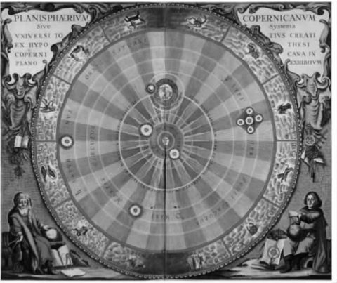
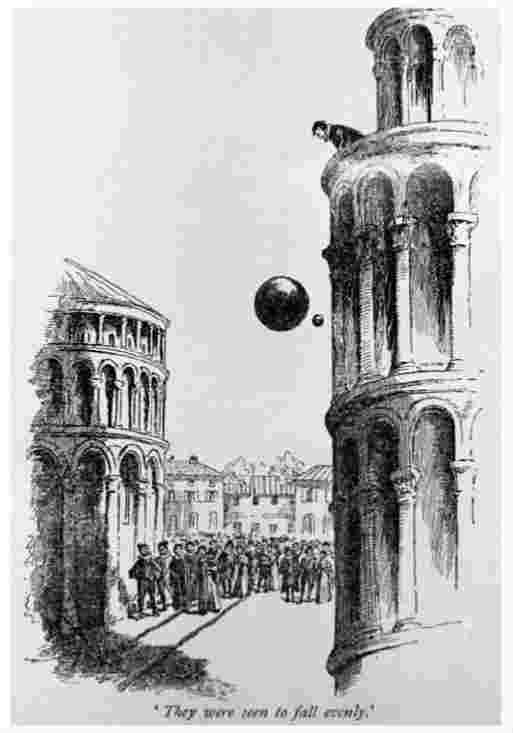
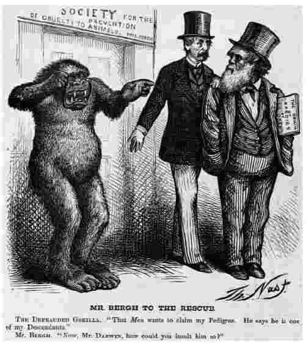
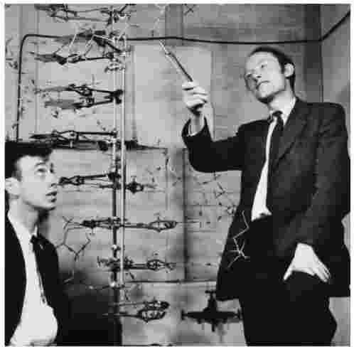

什么是科学？这个问题似乎很容易回答：每个人都知道科学包含诸如物理、化学和生物等学科，而不包括艺术、音乐和神学之类的学科。但是当我们以哲学家的身份询问科学是什么的时候，上述回答就不是我们想要的那种回答了。此时我们所寻求的不是一个通常被称为“科学”的那些活动的清单，而是清单上所列学科的共同特征，换言之，使 科学得以 成为科学的东西是什么。这样一来，我们的问题就不再显得那么平凡了。
但是，也许你仍然认为这个问题有些简单化。科学真的只是在试图理解、解释和预言我们生活于其中的世界吗？这当然是一种合理的答案。但是仅仅如此吗？毕竟，各种宗教也同样在试图去理解和解释世界，可是通常并不被看做科学的一个分支。同样地，虽然占星术和算命也在试图预言未来，但大多数人并不将这些活动称为科学。再来考虑一下历史。虽然历史学家的目的是理解和解释过去发生的事件，但是历史通常被归为人文学科而不是科学学科。和许多哲学问题一样，“何为科学？”这个问题实际上比初看上去难解得多。
许多人认为科学的显著特征在于科学家探索世界的特殊方法。这种观点似乎相当有理。因为许多科学的确使用了在其他非科学的学科中找不到的特殊方法。一个明显的例子就是实验方法的运用，它是现代科学发展史上的转折点。然而，并不是所有的科学都运用实验方法——天文学家显然不能在天上做实验，有时必须代之以仔细的观察。在许多社会科学领域，情形也是如此。科学的另一个重要特征是科学理论的建构。科学家并不是仅仅在记录簿上记下他们实验和观察的结果——他们通常希望用一个一般的理论来解释那些结果。虽然这并不是总能很轻易地做到，但已经获得了一些重大的成果。科学哲学的一个关键问题就是去弄明白实验、观察和理论建构等方法是如何帮助科学家揭开那么多自然之谜的。
现代科学之起源
在今天的中小学和大学里，基本是以非历史的方式来教授科学的。教科书采用尽可能方便的形式来表述科学学科的关键思想，很少涉及促成这些科学发现的漫长而又经常曲折发展的历史过程。作为教学方法，这样做是有道理的。但是对于科学思想发展史的适当关注会对理解科学哲学家感兴趣的那些论题有所助益。实际上，我们将在第五章看到得到论证的这种观点：对科学史的密切关注是做好科学哲学工作所必不可少的。
现代科学起源于1500年到1750年之间发生在欧洲的科学高速发展时期，即我们现在所称的科学革命时期。当然，古代和中世纪的人们也从事科学探索——科学革命并不是凭空产生的。在这些早期阶段，主流的世界观是亚里士多德学说，这一名称来自古希腊哲学家亚里士多德。亚里士多德在物理学、生物学、天文学和宇宙学领域都提出了具体的理论。但是正如他的研究方法那样，亚里士多德的观点对于一个现代科学家来说似乎是非常古怪的。仅举一例：他认为所有的地球物体都仅是由土、火、空气和水四种物质组成的。这种观点显然与现代化学告诉我们的东西相冲突。
在现代科学世界观的发展过程中，第一个关键阶段是哥白尼革命。1542年，波兰天文学家尼古拉斯·哥白尼（1473—1543）发表了一本抨击地心说宇宙模型的著作，地心说模型认为静止不动的地球位于宇宙的中心，行星和太阳都在围绕地球的轨道上旋转。地心说式的天文学也称为托勒密天文学，以古希腊天文学家托勒密的名字命名。它是亚里士多德式世界观的核心，延续了约1800年而未受质疑。但是哥白尼却提出了另外一种观点：太阳 是宇宙的固定中心，包括地球在内的行星都在环绕太阳的轨道上运行（参见图1）。在这种太阳中心说的模型中，地球仅被看做是另外一个行星，因此也就失去了传统曾经赋予它的独特地位。哥白尼的理论最初遇到了非常大的抗拒，尤其是来自天主教会的抗拒。天主教会认为哥白尼的理论是对圣经的背叛，并于1616年禁止了宣扬地动学说的书籍的发行。然而在不到100年的时间里，哥白尼学派就被确立为正统的科学。
哥白尼的革新不仅带来了更好的天文学的进步，通过约翰内斯·开普勒（1571—1630）和伽利略·伽利雷（1564—1642）的努力，它还间接地推动了现代物理学的发展。开普勒发现，行星围绕太阳运行的轨道不是哥白尼所猜想的正圆形，而是椭圆形。这就是他重要的行星运动“第一定律”；他的第二和第三定律明确给出了行星围绕太阳运行的速度。

图1 哥白尼的日心说宇宙模型，描绘了包括地球在内的行星围绕太阳旋转的情形。
开普勒的三定律加在一起，给出了一个远比以前提出的理论更好的行星运动理论，解决了许多世纪以来困扰天文学家的难题。伽利略终生追随哥白尼的学说，也是望远镜的早期发明人之一。当把望远镜对准天空的时候，他得到了许多惊人的发现，其中包括月亮上的山脉、大量的恒星、太阳黑子以及木星的卫星。所有的这些发现同亚里士多德学派的宇宙学完全相矛盾，并在科学共同体转向哥白尼学说的过程中发挥了至关重要的作用。
然而，伽利略最持久的影响并不在天文学，而是在力学中；他推翻了亚里士多德学说中关于重物体比轻物体下落速度更快的理论。取而代之的是，伽利略提出了一种反直觉的观点，认为所有做自由落体运动的物体都以相同速率向地面下落，不受重量影响（参见图2）。（当然，在实践中如果你从相同的高度向下抛一片羽毛和一枚炮弹，炮弹将会首先着地，然而伽利略认为这仅仅是由于空气阻力的作用——在真空中，它们将会同时着地。）另外，他还认为做自由落体运动的物体是均匀加速的，即在相等的时间内获得相等的速度增量；这就是伽利略自由落体定律。伽利略为这一定律提供了尽管不是决定性的但却具有说服力的确凿证据，这构成了他力学理论的核心部分。
通常认为，伽利略是第一位真正的现代物理学家。他第一次表明数学语言可被用来描述物质世界中的真实物体的行为，例如下落的物体、抛射的物体等等。在我们看来这似乎是很显然的——今天用数学语言来表述科学理论已经成为惯例，不仅是物理学，在生物学以及经济学领域也是如此。但在伽利略的时代，这却不是显然的：人们普遍认为数学处理的是纯粹抽象的实体，因此对于物质实体是不适用的。伽利略所做工作的另外一个革新方面是，他强调了运用实验来检验假说的重要性。对于现代科学家来说，这也许又是一个看上去显而易见的观点。但是，在伽利略的时代，人们并不认为实验是一种获得知识的可靠手段。伽利略对于实验检验的强调标志着一种研究自然界的经验方法的出现，这一方法一直沿用至今。
伽利略去世后接下来的那段时期，科学革命突飞猛进。法国哲学家、数学家和科学家勒内·笛卡尔（1596—1650）提出了一门全新的“机械论哲学”，按照这种哲学，物理世界仅由相互作用和相互碰撞的惰性粒子物质构成。控制这些粒子或“微粒”运动的定律就是理解哥白尼式宇宙结构的关键因素，笛卡尔对此深信不疑。机械论哲学声称将用这些惰性的、不可感知的微粒运动来解释一切可观察现象，很快就成为了17世纪下半叶的主流科学观；在某种程度上至今它仍然影响着我们。机械论哲学的观点得到了诸如惠更斯、伽桑狄、胡克、玻意耳等人的支持；对它的广泛接受标志着亚里士多德式世界观寿终正寝。

图2 素描：伽利略测量从比萨斜塔落下物体的速度的神奇实验。
科学革命在艾萨克·牛顿（1643—1727）的研究工作的推动下达到了顶峰，他的贡献在科学史上无人可出其右。牛顿最杰出的著作是《自然哲学的数学原理》一书，出版于1687年。牛顿虽然赞同机械论哲学家们关于宇宙完全是由运动粒子构成的观点，但他却试图改进笛卡尔运动定律和碰撞规则。其结果是，在牛顿的三大运动定律和他著名的万有引力原理的基础之上，强大的动力学和机械论理论诞生了。按照该定律，宇宙中的每一个物体都对所有其他物体产生引力；两物体间引力的大小取决于它们质量的乘积和它们之间距离的平方。运动定律阐明了引力是如何影响物体运动的。牛顿发明了今天被我们称为“微积分”的数学技巧，对理论的表述具有很高的数学上的精确性和严格性。令人惊奇的是，牛顿能够表明开普勒的行星运动定律和伽利略的自由落体定律（经过微小的修正）都是他的运动定律和万有引力原理的逻辑结果。换言之，无论是天上的还是地上的物体运动，都可以用同样的定律来解释。牛顿给出了这些定律精确的定量形式。
牛顿物理学为此后200年左右的科学提供了框架，很快就取代了笛卡尔物理学。主要由于牛顿理论的成功，科学的信心在此期间迅速增强。人们普遍认为牛顿的理论揭示了自然界真正的运行方式，并能够解释一切，至少在原则上是可以的。人们作了更为细化的尝试，以便把牛顿力学的解释模式拓展到越来越多的自然现象上。18和19两个世纪见证了巨大的科学进步，尤其是在化学、光学、能源、热力学以及电磁学研究领域。但是大多数情况下，这些新发展都被看做是在一个宽泛的牛顿宇宙观范围之内作出的。科学家们把牛顿的观念作为最根本的正确观念来接受；剩下的工作就是在细节上对其加以填充而已。
牛顿式的理论图景在20世纪上半叶被动摇了，这要归功于物理学上两项革命性的新发展：相对论和量子力学。爱因斯坦发现的相对论表明，在运用于特别巨大的物体或者运动速度极快的物体时，牛顿力学无法给出正确的解答。相反的是，量子力学则指出在运用于微观领域的亚原子微粒时，牛顿力学无法给出正确解答。相对论和量子力学两者，特别是后者，是非常奇特和激进的理论，它们关于实在本性的论断使很多人难以接受甚至难以理解。它们的出现导致了物理学上重大的观念变革，这些变革一直延续至今。
到现在为止，我们对于科学历史的简要回顾主要集中在物理学领域。这绝非偶然，物理学不仅在历史上非常重要，在某种意义上也是所有科学学科当中最基础的学科。这是因为，其他科学的研究对象本身都是由物理实体构成的。以植物学为例。植物学家研究植物，植物最终是由分子和原子构成的，这些分子和原子都是物理学微粒。因此，植物学显然不如物理学更基础——尽管这并不是说它更不重要。我们将在第三章回到这一点进行讨论。但是，如果完全忽略非物理科学，对现代科学起源的一个即使是简要的阐述也将是不完整的。

图3 达尔文关于人类和大猩猩是从相同祖先演化而来的观点震惊了维多利亚时代的英格兰。（图中文字为：伯格先生来解围。受骗的猩猩：那个人想挤进我们的家谱。他说他是我的后代。伯格先生：哎呀，达尔文先生，你怎么可以那样侮辱他。）
在生物学领域，最著名的事件是查尔斯·达尔文关于通过自然选择实现物种进化的理论发现，这一理论1859年被发表在《物种起源》一书中。在此之前，按照圣经《创世记》的教导，人们普遍认为不同的物种都是由上帝分别创造的。但是达尔文却认为，当代的物种事实上都是由古代的物种通过一种名为自然选择的过程进化而来的。当一些生物组织依靠它们的本身特征比其他的组织留下更多的后代时，自然选择就开始了；如果这些特征被它们的后代所继承，随着时间的推移，这一种群就会越来越好地适应环境。达尔文认为，尽管这一过程很简单，但是经过许多代之后，它就会导致一个物种进化成另一个全新的物种。达尔文为他的理论提供的证据非常有说服力，以至于在20世纪开始之前它就作为正统的科学被人们接受了，尽管有许多来自神学的反对意见（参见图3）。后续的科研工作为达尔文的理论提供了更为惊人的验证，这一理论成为了现代生物学世界观的核心观点。

图4 詹姆斯·沃森和弗朗西斯·克里克以及他们于1953年发现的DNA结构的分子模型——著名的“双螺旋结构”。
20世纪又见证了另外一场迄今尚未完成的生物学革命：分子生物学、特别是分子基因学的问世。1953年沃森和克里克发现了生命体细胞当中组成基因的遗传物质DNA的结构（参见图4）。沃森和克里克的发现解释了基因信息如何从一个细胞被复制到另一个细胞，并从父母传给子女的问题，从而解释了为何子女往往与父母相像。他们的发现开辟了生物学研究的一个激动人心的新领域。在沃森和克里克的发现问世以来的50年里，分子生物学获得飞速发展，改变了我们对遗传以及基因如何构建生物体的理解。最近试图进行的对人类体内整套基因提供分子水平描述图的工作，即人类基因组计划，标志着分子生物学的深远发展。21世纪将会见证这一领域更加激动人心的进步。
过去一百年间投入到科学研究方面的资源比以前任何时候都要多。带来的一个局面就是新科学学科，诸如计算机科学、人工智能、语言学和神经科学的大量涌现。也许近30年来最重要的事件就是认知科学的兴起，认知科学研究人类认知的各个方面，例如感知、记忆、学习和推理，并且改造了传统的心理学。认知科学很大的动力来自于一种观点，该观点认为人脑在某种程度上类似于一台计算机，人类的心智过程因而可以通过与计算机执行的操作加以对比得到理解。认知科学虽然仍处于婴儿期，但很有希望依靠它揭示关于意识活动的大量机理。社会科学，特别是经济学和社会学，在20世纪也得到了繁荣发展，尽管许多人认为它们在成熟性和严格性方面仍落后于自然科学。在第七章我们将回到这个问题上来。
何为科学哲学？
科学哲学的主要任务是去分析各门科学所采用的研究方法。你也许会疑惑，为何这一工作应该由哲学家承担，而不是科学家们自己呢？这是一个很好的问题。部分的回答是，从一个哲学化的视野来观察科学可以使我们进行更深入的探索——去揭示科学实践中暗含的但不被科学家们明确讨论的假设。以科学实验为例来作一解释：假设一个科学家做了一个实验并且获得了一个特定的结果。他反复多次做这一实验，一直得出相同的结果。然后他可能会停下来，并相信如果他继续在完全相同的条件下做这一实验，得到的结果将一直相同。这一假设也许看起来很显然，但是作为哲学家，就会质疑。有何理由让我们假设将来的重复实验会得到相同的结果？我们怎么知道这是真的呢？科学家不可能花费太多的时间来厘清这些略显古怪的问题：他也许有更好的事情去做。这些是纯粹的哲学问题，我们在下一章会加以阐释。
因此，科学哲学的部分工作就是去质疑科学家认为理所当然的假设。但如果我们暗示科学家自己从来都不讨论哲学问题，就有失偏颇了。事实上，历史上许多科学家在科学哲学的发展过程中发挥了重要的作用。笛卡尔、牛顿和爱因斯坦就是著名的例子。他们每一位都对一些哲学问题深感兴趣，这些问题包括科学应该如何进步，科学应该使用什么样的研究方法，我们对这些方法的信任度有多高，科学的认知是否有限度，等等。我们将会看到，这些问题仍然处于当代科学哲学的核心地带。所以，引起科学哲学家兴趣的论题并不是“纯粹哲学的”；相反，它们曾经引起了历史上一些伟大科学家的关注。另一方面，我们也必须承认今天的许多科学家对科学哲学不感兴趣并且也对其缺乏了解。这当然不是好事，但这并不表明哲学问题已失去意义。倒不如说，这是自然科学加速专业化和现代教育体系中科学和人文学科两极分化的一个结果。
你现在也许仍然想确切知道科学哲学到底是什么。正如上文所说的，说它是“研究科学方法”的学问并没有交代得很确切。与其提供一个内容更加丰富的定义，我们不如通过直接考察科学哲学中的一个典型问题来进行解释。
科学和伪科学
回顾我们开始时提出的问题：什么是科学？作为20世纪一位颇有影响的科学哲学家，卡尔·波普尔认为科学理论的基本特征是它应具有可证伪性。称一个理论是可证伪的并不是说它是错的。而是说，它意味着该理论能够作出一些可以用经验进行检验的特定预测。如果这些预测被发现是错误的，这一理论就被证伪了，或者说被否证了。因此一个可证伪的理论是指我们能够发现它是错的——它不能和每一个可能的经验过程相容。波普尔认为一些所谓的科学理论是不满足这一条件的，因此根本不应该被称为科学；它们不过是伪科学。
弗洛伊德的精神分析理论是波普尔钟情的伪科学例子之一。按照波普尔的观点，弗洛伊德的理论可以与无论怎样的经验发现相一致。对于患者的任何行为，弗洛伊德学派都可以在他们的理论中找到针对性的解释——他们永远不会承认自己的理论是错误的。波普尔用下面的例子阐述了他的观点。设想一个带有蓄意谋杀倾向的人把一个小孩推到了河里，而另一个人为了救这个小孩牺牲了生命。弗洛伊德学派能够以同样轻易的方式解释两个人的行为：前者精神抑郁，后者已经获得了精神的升华。波普尔认为通过使用诸如精神抑郁、精神高尚和无意识的需求等概念，弗洛伊德的理论可以同任何临床数据相兼容；因此它是不可被证伪的。
波普尔认为，马克思的历史理论也存在这种问题。马克思主张，在全世界的工业化社会中，资本主义将让位于社会主义并最终走向共产主义。但是当这一断言没有变成现实之时，马克思主义者并没有承认马克思的理论是错的，而是会提出一种特殊的辩解来说明发生的事实现象其实与他们的理论完全一致。例如，他们也许会说走向共产主义的必然进程由于福利国家的兴起暂时减缓了速度，福利国家的兴起“软化”了无产阶级并削弱了他们的革命热情。采用这样的方法，马克思的理论就会变得同弗洛伊德的理论一样，与任何可能出现的事态相容。因此按照波普尔的标准，它们都不是真正的科学。
波普尔把弗洛伊德和马克思的理论同爱因斯坦的万有引力理论进行了比较，后者也被称为广义相对论。与弗洛伊德和马克思的理论不同，爱因斯坦的理论作出了一个非常明确的预测：来自遥远星球的光线会在太阳引力场的作用下发生偏转现象。通常这种效果是不会被观察到的——除非在日食的情况下。1919年英国天文学家亚瑟·爱丁顿爵士组织了两个探险考察队去观察那年的日食现象，一队去了巴西，另一队去了靠近非洲大西洋沿岸的普林西比岛，目的是验证爱因斯坦的预测。探险队发现星光确实被太阳偏折了，偏斜值几乎与爱因斯坦预测的完全一致。这件事给波普尔留下了极为深刻的印象。爱因斯坦的理论表达了一个确定的、精确的预测，这一预测被观察所证实。假如事实上星光没有被太阳偏折，就表明爱因斯坦是错误的。爱因斯坦的理论因此满足了可证伪性的条件。
波普尔将科学与伪科学区分开来的尝试直观上似乎是很合理的。一种可以符合任何经验数据的理论确实是值得怀疑的。但是有些哲学家认为波普尔的科学标准过于简单化了。波普尔批评弗洛伊德学派和马克思主义者通过解释来回避同他们的理论相矛盾的任何资料数据，而不是接受理论被推翻的事实。看上去他所批评的的确是一种值得怀疑的做法。但是，有证据表明这种做法被“有名望的”科学家们经常地采用——这些人并不是波普尔想要归入伪科学领域的科学家——并且已经带来了重要的科学发现。
另外一个天文学方面的例子可以解释这一点。上文提到的牛顿的万有引力理论预测了行星在围绕太阳旋转时应在的轨道。大多数情况下，这些预测通过观察得到了证实。然而，观测到的天王星的轨道却一直与牛顿的理论预测不一致。这一谜团在1846年被两位科学家揭开，英国的亚当斯和法国的勒威耶各自独立地完成了这一工作。他们认为存在着另外一个还未被发现的行星，它对天王星产生了附加的引力作用。假如该行星的引力作用的确是天王星轨迹异常的原因，亚当斯和勒威耶就能够计算出这颗行星应有的质量和应在的位置。不久，人们就在几乎恰好是亚当斯与勒威耶预测的位置发现了海王星。
现在很明显我们不应把亚当斯和勒威耶的行为斥为“非科学”——毕竟，这导向了他们对一颗新行星的发现。但是他们做的正是波普尔批评马克思主义者们所做的事情。他们开始于一个理论——对天王星轨道作出不正确预测的牛顿万有引力理论。他们没有断定牛顿的理论必定是错的，而是忠于这一理论并且试图通过假定存在一颗新行星的方式来解释与理论产生矛盾的观察事实。同样，当资本主义还没有显示出让位于共产主义的迹象的时候，马克思主义者没有得出结论说马克思的理论一定是错的，而是忠实于这一理论并且试图通过其他的方式来解释与理论相矛盾的观察现实。那么，如果我们承认亚当斯和勒威耶的探究方式是好的、的确是科学的范例，谴责马克思主义者是从事伪科学研究就确实不公平吗？
这就表明了波普尔将科学与伪科学区分开来的尝试是不完善的，尽管初看上去很有道理。亚当斯和勒威耶的例子绝不是个案。一般情况下，科学家们不会一遇到与观察数据相矛盾的情况就立即放弃他们的理论。通常，他们会寻找解决矛盾的方法而非放弃理论；这一点我们在第五章里还会谈到。值得牢记的是，事实上科学中的每一项理论都会和某一些事实现象相冲突——找到一个完全符合所有数据资料的理论是非常困难的。显然，如果一个理论与越来越多的数据资料一直相冲突，并且找不到解释冲突的合理方法，它最终将不得不被推翻。但是，如果科学家们在刚发现问题时就轻易抛弃理论，科学就不会有多少进步了。
波普尔所提出的科学标准的失败暴露了一个重要问题。是否真的能够找到所有被我们称为“科学”之物所共同具有且不被任何他物所拥有的特征呢？波普尔认为这个问题的答案是肯定的。他觉得弗洛伊德和马克思的理论显然是不科学的，因此必定会存在这些理论所不具有的而真正科学理论拥有的某些特征。但是，不管我们是否接受波普尔对弗洛伊德和马克思的否定评价，他关于科学拥有“本质特征”的设想都值得怀疑。毕竟，科学是一种多元性的活动，包含了范围广泛的不同学科和理论。也许它们共享一套能够定义何为科学的固定的特征，但也许这种特征并不存在。哲学家路德维希·维特根斯坦就认为，不存在能够定义何为“游戏”的一系列固定的特征；但却存在一束松散的特征，这些特征的大部分被大多数的游戏所拥有。然而也许某个特定的游戏不具有该特征束中的任一特征，却仍然是一个游戏。科学或许也是如此。如果真是这样，将科学与伪科学区分开来的一个简单化标准就不可能找到。